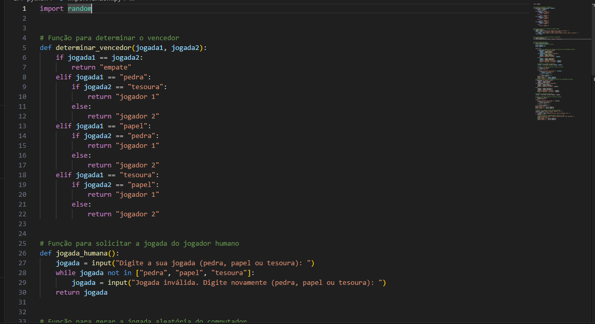

trabalho do Jokenpô

Foi pedido que implementasse o jogo de jokenpô em dubla ou solo em python na diciplina de Raciocínio Algorítmico, eu escoli fazer o trabalho individualmente tendo que ter 3 modos esses são: humano x humano, humano x computador ou computador x computador e seguindo as regras do jokenpô.
Feito por: Murilo Chandelier Pedrazzani